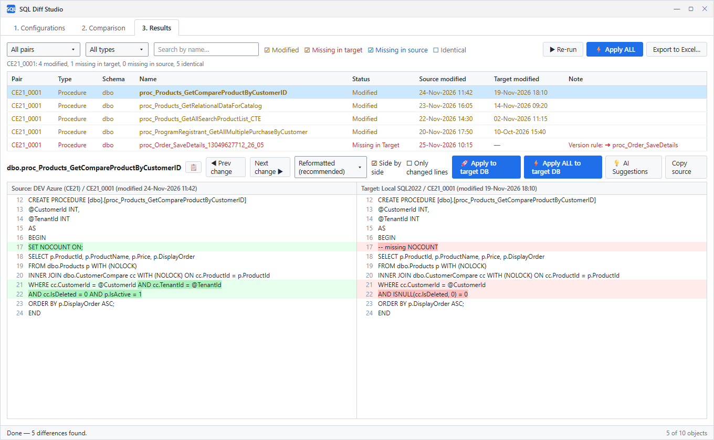
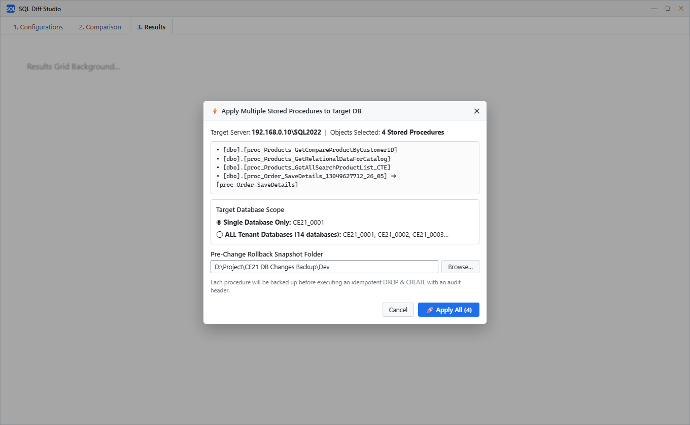

SQL Diff Studio reduces manual workload for managing multiple DB migrations. Compare stored procedures token-by-token, deploy idempotent DROP & CREATE scripts in bulk, and capture rollback snapshots automatically.





Every workflow eliminates repetitive SSMS scripting, noisy formatting diffs, and risky ad-hoc deployments.
Paste SP names—even copied from DROP PROC or EXEC scripts—into Only include. SQL Diff Studio pushes parameterized IN and wildcard LIKE filters directly to SQL Server so it skips scanning unrelated database objects.
Activates version-to-base matching strictly when you enter a versioned SP (e.g. _13049627712_26_05) and renames it cleanly to the base SP on deploy.
Runs a standalone IF OBJECT_ID(...) DROP before CREATE with an embedded developer and ticket audit header.
Multi-select rows or click Apply ALL to deploy across one or all tenant DBs after saving pre-change .sql snapshots.
Instant offline SARGability rules, optional Groq/OpenAI query rewrites with live token tracking, and Windows DPAPI secret encryption.
One focused desktop window takes you from connection setup to verified rollout.
Save DEV, Local, and Staging SQL Server profiles with Windows DPAPI encryption. Set your shared backup folder and test optional AI credentials.
Select database pairs, enter specific SP names or wildcards, and run a token-normalized comparison that ignores formatting noise.
Inspect side-by-side diffs, run SARGability checks, and deploy one or all selected SPs with automatic rollback snapshots.
Install SQL Diff Studio v1.0.0 with the guided Windows Setup Wizard (7.2 MB) or download the portable ZIP distribution.